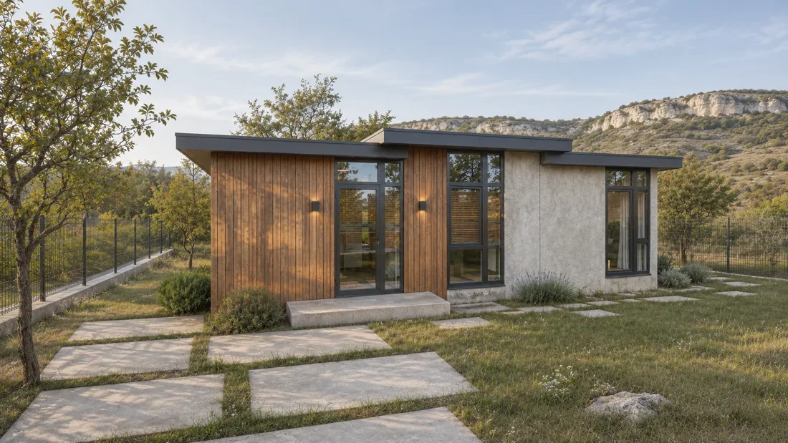
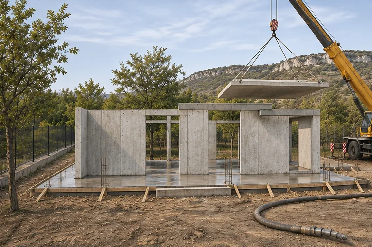
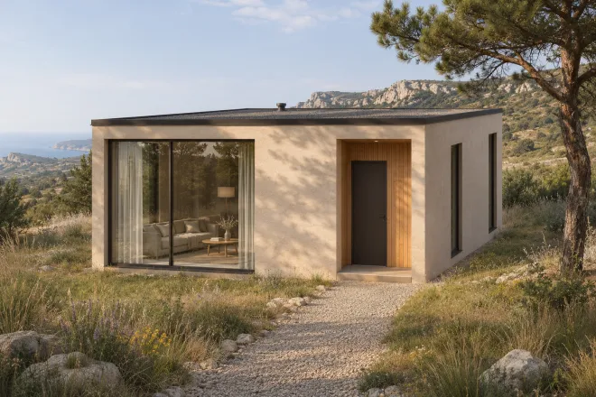
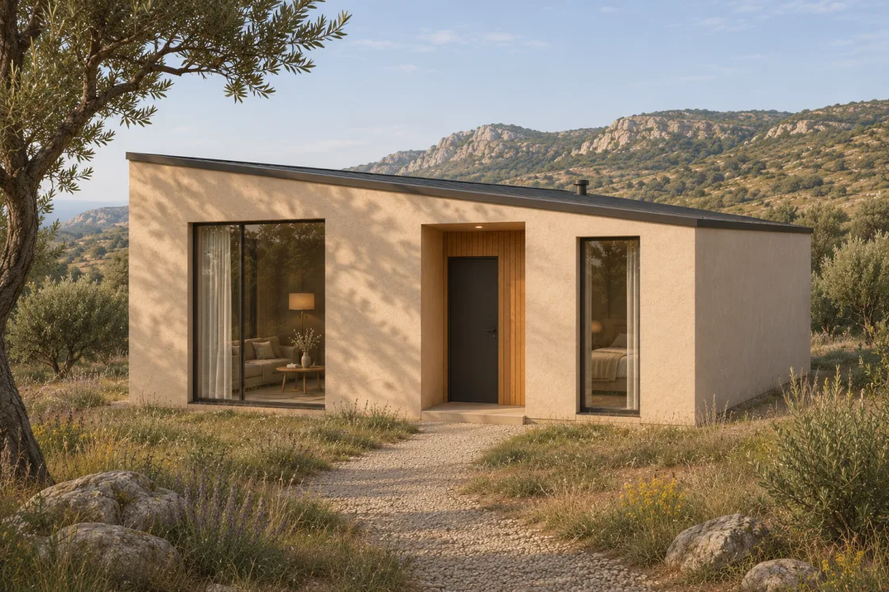

01 / 09 · Эскиз
Сначала — замысел
Увязываем планировку, посадку дома и вид из окон.
Дома из заводских панелей
Строим дома для жизни. Проектируем доходные дома и гостевые комплексы под ваш участок.

Дом 89 · от эскиза до фасада
Листайте, чтобы пройти путь от чертежа до готового фасада. При прокрутке вверх история идёт обратно.





01 / 09 · Эскиз
Увязываем планировку, посадку дома и вид из окон.
02 / 09 · Основание
Готовим основание и заливаем бетон.
03 / 09 · Первая панель
Кран подаёт первый стеновой элемент на свободное основание.
04 / 09 · Стены
Соседние панели встают по очереди. Под окна и двери остаются проёмы.
05 / 09 · Перекрытие
Кран подаёт первую плиту над открытым коробом. По проекту эта плита входит в конструкцию плоской крыши.
06 / 09 · Собранная коробка
Перекрытие смонтировано. Оконные и дверные проёмы пока открыты.
07 / 09 · Окна
Окна и вход уже на месте. Наружная отделка ещё впереди.
08 / 09 · Отделка
На фасаде появляются деревянные панели и светлая отделка.
09 / 09 · Флагман
Три спальни и 80,1 м² внутри. Посмотрите план или подберите комплектацию для своего участка.
Эскиз и стадии монтажа — художественная визуализация. Финальный фасад — изображение из коммерческого предложения.
Каталог

80,1 м² внутри. Три спальни и кухня-гостиная 29,2 м².

99,8 м² внутри. Три спальни, две гардеробные и отдельный санузел родителей.

Две спальни, кухня-гостиная и свой двор. Компактный дом для круглогодичного проживания.

Компактная концепция с односкатной крышей.
Сравниваете с СИП или каркасом? Сопоставьте одинаковую комплектацию, характеристики стены и состав работ по смете.
Как сравнить технологииПрямая геометрия Open Life, мягкие формы Soft и арочные фасады Resort.
Расскажите о планах и участке. Покажем варианты, с которых можно начать.
Подобрать дом